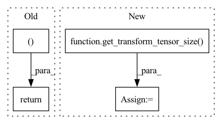

Pattern ID :2529

Before Change
grad_output: torch.Tensor = grad_output.view(-1, 3, 1)
grad_input0 = grad_output @ tensor.view(-1, 1, 3)
grad_input1 = group[:, :, :3].transpose(1, 2) @ grad_output
return grad_input0, grad_input1.view(tensor.shape)
_transform_from_autograd_fn = TransformFrom.apply
_jtransform_from_autograd_fn = _jtransform_from_impl
After Change
group: torch.Tensor = ctx.saved_tensors[0]
tensor: torch.Tensor = ctx.saved_tensors[1]
grad_output: torch.Tensor = grad_output.unsqueeze(-1)
tensor_size = get_transform_tensor_size(tensor)
grad_input0 = grad_output @ tensor.view(*tensor_size, 1, 3)
grad_input1 = group[..., :3].transpose(-1, -2) @ grad_output
return grad_input0, grad_input1.squeeze(-1)
In pattern: SUPERPATTERN
Frequency: 3
Non-data size: 4
Instances
Fragment ID: 10503419
Project Name: facebookresearch/theseus
Commit Name: f8f533dbde1f2fc8e8591949bb127c0488467a20
Time: 2023-05-10
Author: 6612911+fantaosha@users.noreply.github.com
File Name: theseus/labs/lie/functional/so3_impl.py
M Class Name: TransformFrom
N Class Name: TransformFrom
M Method Name: backward(3)
N Method Name: backward(3)
M Parent Class: lie_group.BinaryOperator
N Parent Class: lie_group.BinaryOperator
M File Name: theseus/labs/lie/functional/so3_impl.py
N File Name: theseus/labs/lie/functional/so3_impl.py
M Start Line: 690
M End Line: 694
N Start Line: 693
N End Line: 698
'>
Before Change
(grad_output @ tensor.view(-1, 1, 3), grad_output), dim=-1
)
grad_input1 = group[:, :, :3].transpose(1, 2) @ grad_output
return grad_input0, grad_input1.view(tensor.shape)
_transform_from_autograd_fn = TransformFrom.apply
_jtransform_from_autograd_fn = _jtransform_from_impl
After Change
group: torch.Tensor = ctx.saved_tensors[0]
tensor: torch.Tensor = ctx.saved_tensors[1]
grad_output: torch.Tensor = grad_output.unsqueeze(-1)
tensor_size = get_transform_tensor_size(tensor)
grad_input0 = torch.cat(
(grad_output @ tensor.view(*tensor_size, 1, 3), grad_output), dim=-1
)
grad_input1 = group[..., :3].transpose(-1, -2) @ grad_output
'>
Fragment ID: 10503420
Project Name: facebookresearch/theseus
Commit Name: f8f533dbde1f2fc8e8591949bb127c0488467a20
Time: 2023-05-10
Author: 6612911+fantaosha@users.noreply.github.com
File Name: theseus/labs/lie/functional/se3_impl.py
M Class Name: TransformFrom
N Class Name: TransformFrom
M Method Name: backward(3)
N Method Name: backward(3)
M Parent Class: lie_group.BinaryOperator
N Parent Class: lie_group.BinaryOperator
M File Name: theseus/labs/lie/functional/se3_impl.py
N File Name: theseus/labs/lie/functional/se3_impl.py
M Start Line: 781
M End Line: 787
N Start Line: 781
N End Line: 788
'>
Before Change
jacobians = []
jacobians.append(jacobian_g)
jacobians.append(jacobian_p)
return jacobians, _transform_from_impl(group, tensor)
class TransformFrom(lie_group.BinaryOperator):
@classmethod
After Change
check_group_tensor(group)
check_transform_tensor(tensor)
ret = _transform_from_impl(group, tensor)
size = get_transform_tensor_size(ret)
jacobian_g = group.new_empty(*size, 3, 6)
jacobian_g[..., :3] = group[..., :3]
jacobian_g[..., 3:] = -group[..., :3] @ SO3._hat_autograd_fn(tensor)
jacobian_p = group[..., :3]
'>
Fragment ID: 10503423
Project Name: facebookresearch/theseus
Commit Name: f8f533dbde1f2fc8e8591949bb127c0488467a20
Time: 2023-05-10
Author: 6612911+fantaosha@users.noreply.github.com
File Name: theseus/labs/lie/functional/se3_impl.py
M Class Name: AnonimousClass
N Class Name: AnonimousClass
M Method Name: _jtransform_from_impl(2)
N Method Name: _jtransform_from_impl(2)
M Parent Class:
N Parent Class:
M File Name: theseus/labs/lie/functional/se3_impl.py
N File Name: theseus/labs/lie/functional/se3_impl.py
M Start Line: 755
M End Line: 762
N Start Line: 754
N End Line: 762